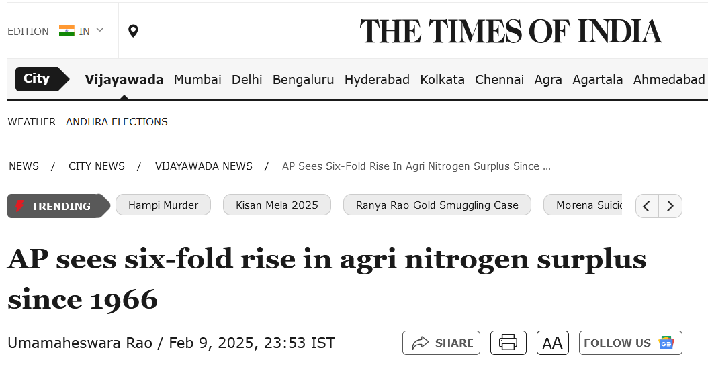
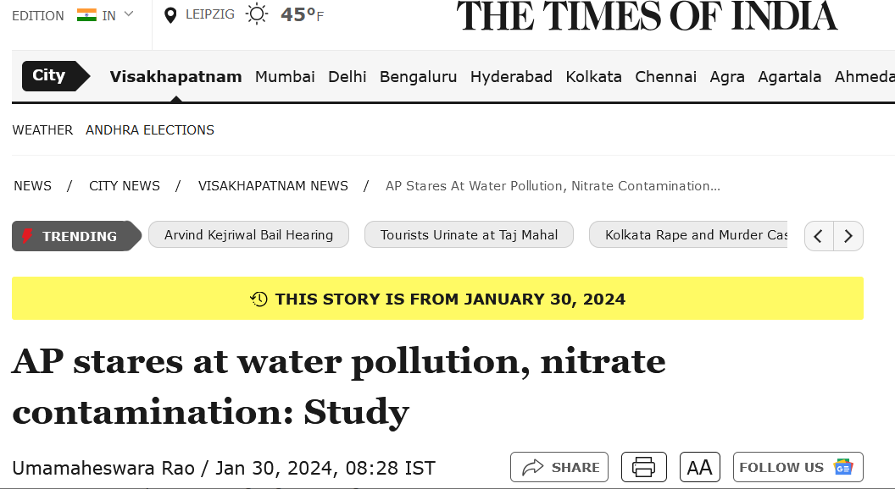
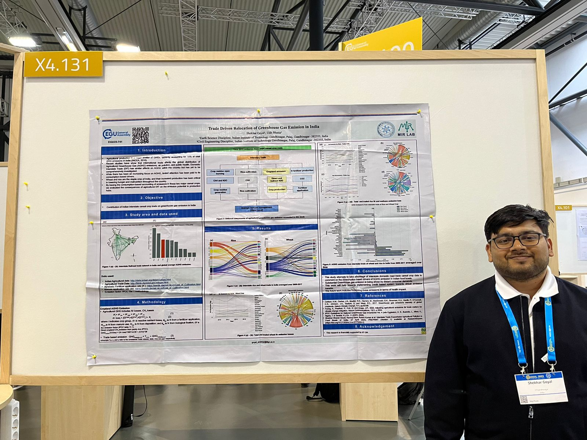
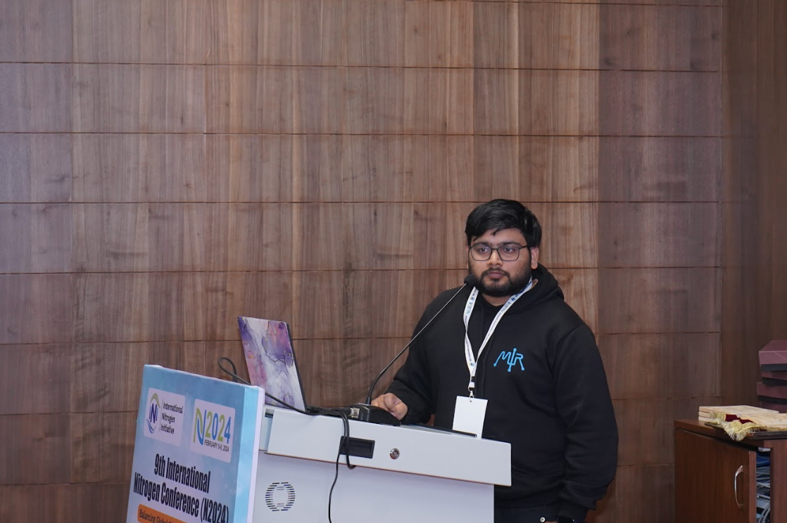
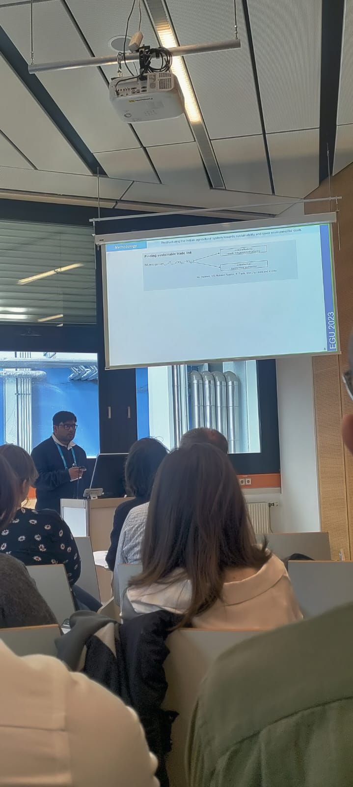
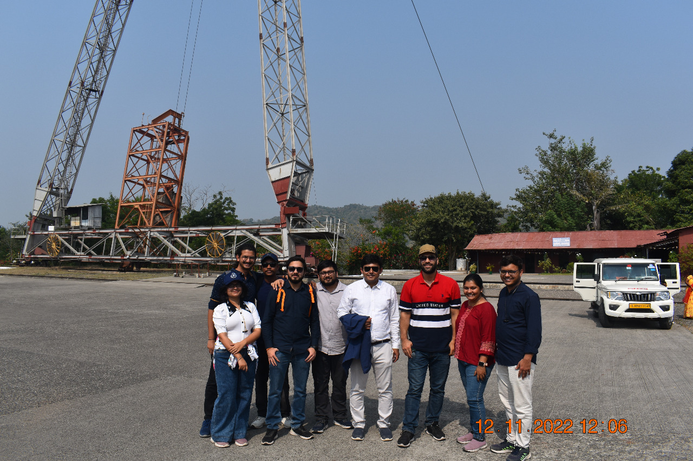
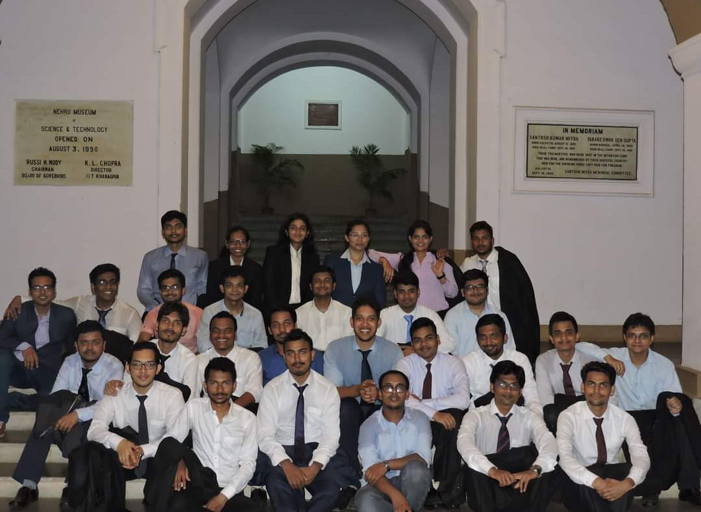
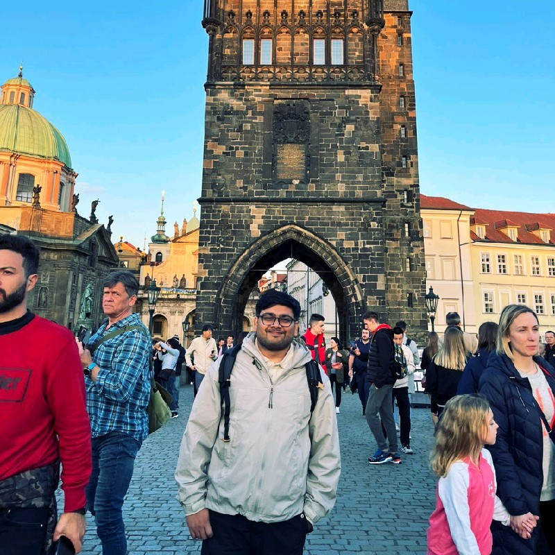

AP sees six-fold rise in agri nitrogen surplus since 1966
The Times of India · February 2025 · coverage of long-term nitrogen-surplus research.
Engagement
Conferences, scientific service, field experiences and media coverage connecting environmental research with wider audiences.
Media coverage

The Times of India · February 2025 · coverage of long-term nitrogen-surplus research.

The Times of India · January 2024 · coverage linked to IITGN–UFZ research.
Scientific activity
A selection of photographs retained from the original website.






Service & recognition
Outstanding Student and PhD Candidate Presentation Award.
Session convener in 2025 and 2026 on infrastructure resilience, networked systems and extreme-weather impacts.
Workshop organisation spanning infrastructure resilience and technology transfer for farmers.